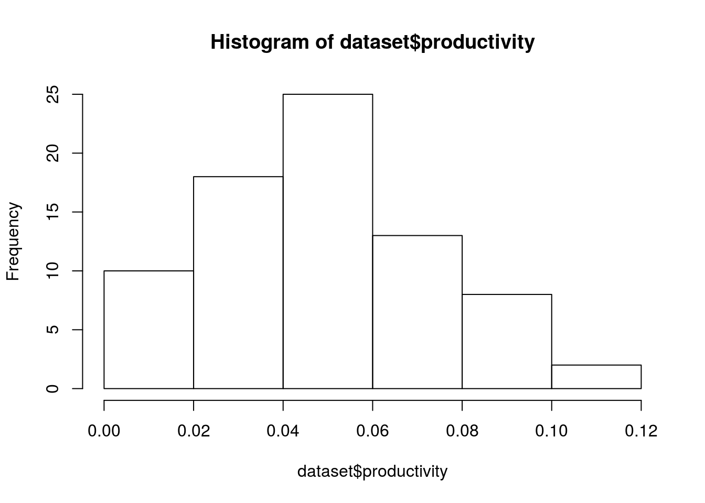
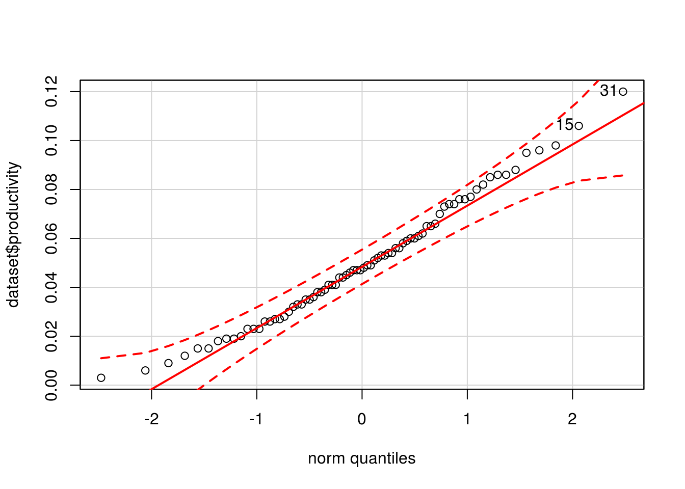
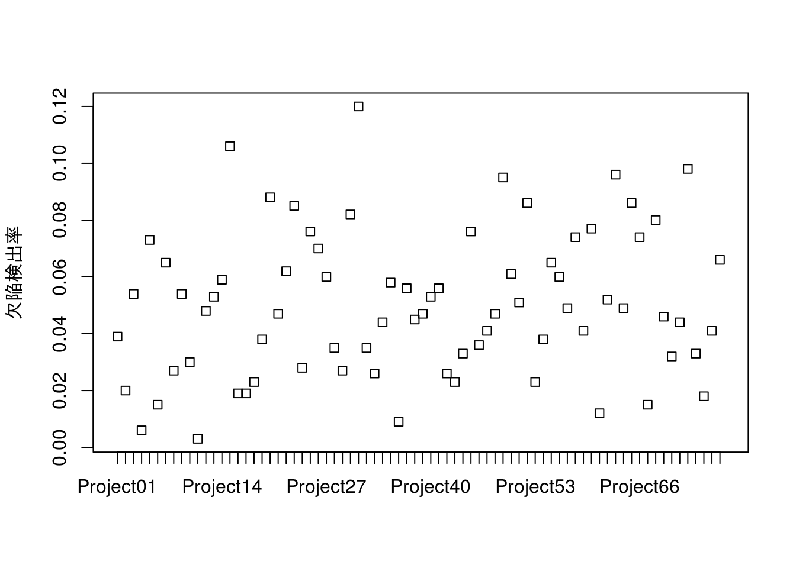
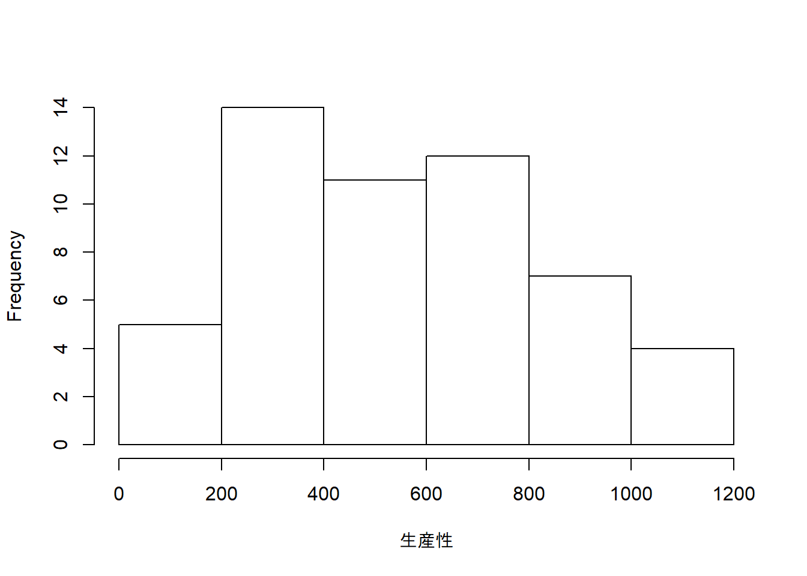
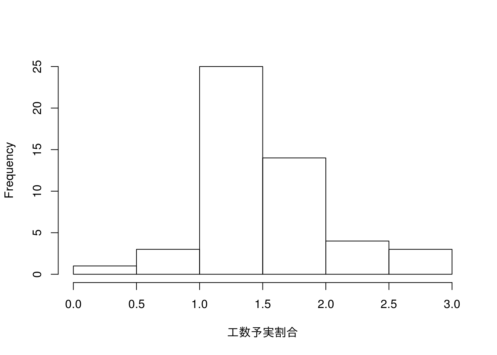
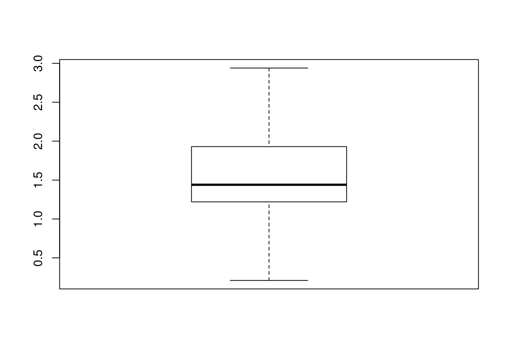
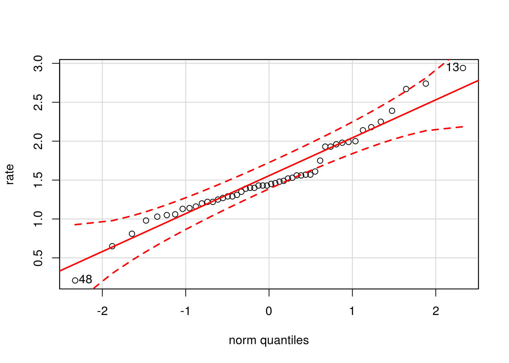
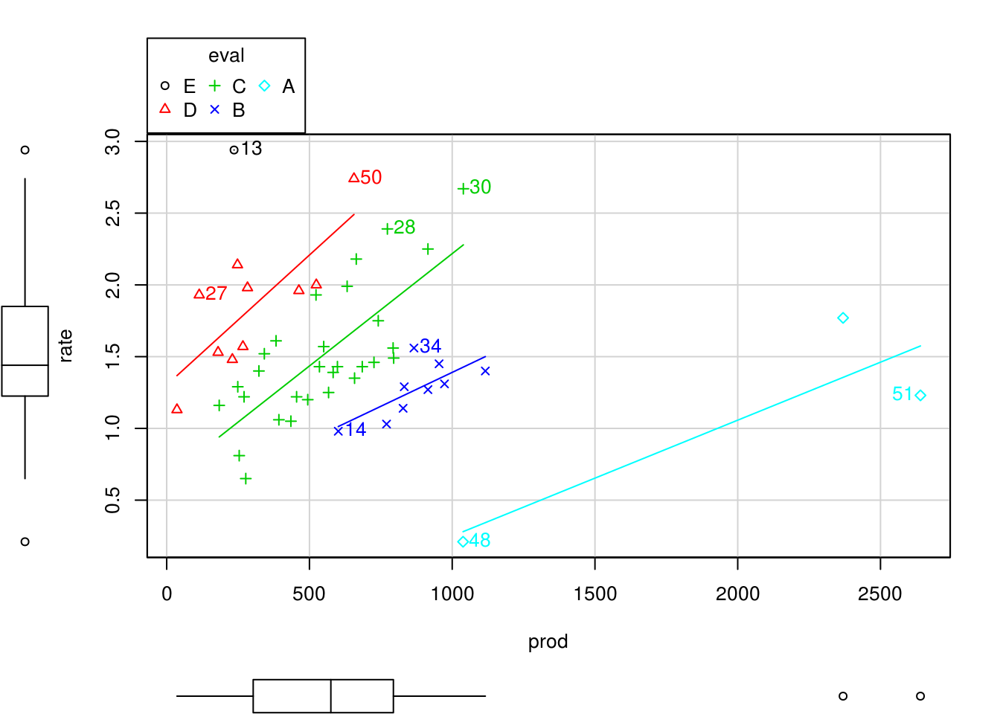

第1章 例題解答例
はじめに
本資料は『ソフトウェアメトリクス統計分析入門』(以降、テキストと記載)の第1章の例題と演習問題をRで解いた際の解答例を示したものです。また、R Markdownを使うメリットを示すための一手段として作成していますので、テキストにおける計算方法とは異なる部分もあります。本資料で使用しているデータの入手に関してはテキストにてご確認下さい。
本資料がHTML形式の場合、Rのコードを参照するには右側にある[Code]ボタンをクリックして下さい。なお、JavaScriptは必ずOnにしてご覧下さい。
例題
例題1.1
生産性の測定を開始し、あるプロジェクトの生産性が0.09FP/人時となりました。まだデータをとり始めたばかりなので、この0.09という値の良否が判断できません。 そこで、『ソフトウェア開発データ白書』をベンチマークとして、業界内において、どの程度の位置づけとなるのかを調べることにしました。
『ソフトウェア開発データ白書2012-2013』のp.288に業種別FP生産性データが掲載されています。それを図1.1に示します。この組織の業種は、「K. 金融・保険業」に該当します。さて、このプロジェクトの生産性をどのように評価すればよいでしょうか。
出典：ソフトウェアメトリクス統計分析入門 P12
データの設定
本例題で利用するデータの数は多くないので、直接、Rのコードで変数として設定します。
x.prod <- 0.090 # 評価対象となる生産性(productivity)
x.mean <- 0.051 # 同業種での生産性の平均値
x.sd <- 0.029 # 同業種での生産性の標準偏差(不偏標準偏差)| 項目 | 値 |
|---|---|
| 評価対象となる生産性 | \(0.09\) |
| 同業種での生産性の平均値 | \(0.051\) |
| 同業種での生産性の標準偏差 | \(0.029\) |
Zスコアの計算
テキストではZスコアを計算してから標準正規分布を用いて上位確率を計算していますが、本資料では平均値\(0.051\)、標準偏差\(0.029\)の正規分布から直接上位確率を求めています。
# Zスコアを計算しないでも確率は計算できる(上位からの確率)
prob <- pnorm(x.prod, mean = x.mean, sd = x.sd, lower.tail = FALSE)
# 偏差値(standard score)を出す場合は平均値50、標準偏差10の正規分布の確率から
# 逆算すればよい
ss <- qnorm(prob, mean = 50, sd = 10, lower.tail = FALSE)計算の結果、対象プロジェクトは上位\(9\%\)に位置し、その偏差値は\(63\)となることがわかります。
例題1.2
以下に、ある組織でプロジェクトごとに測定された最終システムテストの欠陥検出率のデータが76 個あります。
欠陥検出率が高いほど製品の信頼性が低く、良くないプロジェクトと考えます。 これらのデータを活用して欠陥検出率上限の基準値を設定し、それを超える場合はプロジェクト終了後に次期プロジェクトに向けて何らかの改善施策を実施してもらう などの管理をしたいと考えています。 管理レベルとして、全体の10％ぐらいが改善対象になるように基準値を設定してください。 出典：ソフトウェアメトリクス統計分析入門 P22
本例題で利用するデータは、予めCSVファイルとして保存されているものとします。
データ名は日本語のままでも構いませんが、RStudioでコーディングする場合は、色々と不都合なので、読み込んだ後で変更しておきます。
データ分布の確認
例題1.1では、対象となるデータが正規分布にしたがっているものと仮定していましたが、本例題では、最初にデータが正規分布に従っていることを確認します。
テキストではヒストグラムのみを確認して、詳細は補足1.3に記載されていますが、ここではヒストグラム、箱ひげ図、QQプロット、シャピロ・ウィルクの正規性の検定の四つの手段で確認を行います。
ヒストグラム
hist(dataset$productivity)若干、左に偏っている(右に歪んだ)形をしていますが、概ね正規分布と言っても差し障りない分布のように見えます。
箱ひげ図
boxplot(dataset$productivity)
外れ値が一つ示されていますが、中央値も上下ヒンジのほぼ中央にあり、こちらからも正規分布と言っても差し障りのない分布のように見えます。
QQプロット
# 分布の正規性を確認
car::qqPlot(dataset$productivity, dist = "norm", id.method = "y", id.n = 2,
labels = rownames(dataset))
## 31 15
## 76 75データは全て点線の内側に収まっており、正規分布と見えます。
正規性の検定
shapiro.test(dataset$productivity)##
## Shapiro-Wilk normality test
##
## data: dataset$productivity
## W = 0.98179, p-value = 0.3463検定の結果、\(p = 0.3463\)となり帰無仮説が棄却されませんでしたので、正規分布にしたがっていないとは言えません。
外れ値の確認
データ分布の確認において、対象のデータ分布は正規分布とみなせるという結論になりましたが、\(0.12\)というデータが外れ値で ある可能性があります。念の為にドットチャートを使って確認します。
# ドットチャートによるデータの確認
stripchart(productivity ~ pj.no, vertical = TRUE, method = "stack",
ylab = "欠陥検出率", data = dataset) ドットチャートをみると\(0.12\)という値は突出しているようにも見えますが、近くの\(0.106\)と比べると 然程、突出しているようにも思えません。そこで、
- \(0.12\)を外れ値としない
- \(0.12\)を外れ値とする
という2つのパターンで算出し、その結果を比較してみることにします。
平均値と標準偏差の算出
では、上記の2パターンで平均値と標準偏差を算出してみます。
外れ値としない場合
# 平均値と標準偏差
dataset.mean <- mean(dataset$productivity)
dataset.sd <- sd(dataset$productivity)当該データを外れ値とみなさない場合の平均値\((mean)\)と標準偏差\((sd)\)は以下の通り
\[\mbox{平均値} = 0.0501\] \[\mbox{標準偏差} = 0.0254\]
外れ値とした場合
# 外れ値の行数を得る
row.num <- which(dataset$productivity >=
min(boxplot.stats(dataset$productivity)$out))
# 平均値と標準偏差(外れ値を外した場合)
dataset.mean.removed <- mean(dataset$productivity[-row.num])
dataset.sd.removed <- sd(dataset$productivity[-row.num])当該データを外れ値とみなした場合の平均値\((mean)\)と標準偏差\((sd)\)は以下の通り
\[\mbox{平均値} = 0.0491\] \[\mbox{標準偏差} = 0.0242\]
両者の差の確認
# 外さない場合と外した場合の差(平均値と標準偏差)
diff.mean <- dataset.mean - dataset.mean.removed
diff.sd <- dataset.sd - dataset.sd.removed
per.mean <- (dataset.mean - dataset.mean.removed) / dataset.mean * 100
per.sd <- (dataset.sd - dataset.sd.removed) / dataset.sd * 100平均値の差は\(9\times 10^{-4}\)、標準偏差の差は\(0.0012\)と共に約0.001ですが、率\([\%]\)で見ると\(1.9\%\)と\(4.6\%\)なため基準値も2パターンで出してみます。
基準値の算出
テキストではZスコアを計算してから標準正規分布を用いて計算していますが、本資料では例題1.1でやったように各々の正規分布から直接基準値を算出します。
# 基準値の算出
std.value <- qnorm(0.1, mean = dataset.mean, sd = dataset.sd,
lower.tail = FALSE)
std.value.removed <- qnorm(0.1, mean = dataset.mean.removed,
sd = dataset.sd.removed,
lower.tail = FALSE)外れ値としない場合の基準値は\[0.083\] 外れ値とした場合の基準値は、\[0.08\]
となります。念のためにこの基準値を用いた場合、基準値外となる要改善数を確認します。
基準値の確認
# 条件を満たすデータの数を数える
num <- sum(dataset$productivity > std.value)
num.removed <- sum(dataset$productivity > std.value.removed)
# 比率を算出する
per.num <- round(num / length(dataset$productivity) * 100)
per.num.removed <- round(num.removed / length(dataset$productivity) * 100)外れ値としない場合の要改善数は\[9(12\%)\] 外れ値とした場合の要改善数は\[10(13\%)\] となり、当初目標であった\(\underline{10\%\mbox{程度}}\)を概ね満たしていると言える。
演習
第1章は全ての問題で「第1章_例題演習データ」ファイルの「1章演習データ」シートにあるデータを使用します。このシートにはある架空の組織のプロジェクトごとの生産性(行/人月)と工数予実割合(実績総工数/見積総工数)のデータが55プロジェクト分あります。
- \(\mbox{プロジェクト名}(prj)\)
- \(\mbox{生産性}(prod) = \frac{\mbox{新規開発行数(行)}}{\mbox{総開発工数(人月)}}\)
- \(\mbox{工数予実割合}(rate) = \frac{\mbox{実績総工数(人月)}}{\mbox{見積総工数(人月)}}\)
演習データは予めRで読み込めるCSVファイルに加工してあるものとし、これを読み込み、読み込んだ中身を確認します。
演習1.1
例題1.2 の考え方を適用して、「第1章演習データ」の生産性の上限、下限の基準値を設定してください。設定のための条件は以下のとおりとします。
- 基準の下限を外れたプロジェクトは、なぜそのように低くなってしまったかの原因究明を行い、次のプロジェクトで改善をする目的で下限の基準値を活用します。
- 下位10％ぐらいが対象となるように下限の基準値を設定します。
- 基準の上限を外れたプロジェクトは、ベストプラクティスとして理由を探り、他のプロジェクトへの水平展開を行う目的で上限の基準値を活用します。
- 上位5％ぐらいが対象となるように上限の基準値を設定します。
- 各基準値を決める前にデータ分布の確認を行い、そこで外れ値とみなされたデータは除去します。
データ分布の確認
histgram
hist(x$prod, main = "", xlab = "生産性")生産性のヒストグラム
生産性データのヒストグラムを描いて見ると左側の大きな山と右側の小さな丘に分かれていることが分かります。このことから右側の小さな丘のデータは外れ値の可能性があるので、箱ひげ図にて確認します。
boxplot
boxplot(x$prod)生産性の箱ひげ図
箱ひげ図を描いて見るとヒストグラムで右側にあったデータ(2640, 2369)は外れ値と判断できますので、分析対象データとしてこれらを削除してから分析を行うことにします。
外れ値の削除
箱ひげ図のヒンジ(ひげ)を超える値を外れ値とします。なお、箱ひげ図のヒンジは五数要約にて算出可能です。
# ヒンジ内のデータを抜き出す
x.removed <- subset(x, (prod >= boxplot.stats(x$prod)$stats[1]) &
(prod <= boxplot.stats(x$prod)$stats[5]))
x.removed
データ分布の再確認
以下のタブは.tabset-fadeと.tabset-pillsを指定指定しています。
histrgam
hist(x.removed$prod, main = "", xlab = "生産性")
外れ値を除いた生産性のヒストグラム
boxplot
boxplot(x.removed$prod)外れ値を除いた生産性の箱ひげ図
外れ値を削除した後の生産性データのヒストグラムならびに箱ひげ図を見ると概ね正規分布に近い分布をなしているように見えます。念のためにQQプロットと正規性の検定により正規分布と言えるかどうかを確認しておきます。
正規性の確認
# QQプロット(RcmdrのQQプロットを使うのが簡単)
with(x.removed, car::qqPlot(prod, dist = "norm", id.method = "y", id.n = 2,
labels = rownames(x.removed)))
## 6 20
## 53 1# 正規性の検定(帰無仮説H0は「分布が正規分布に從う」である)
shapiro.test(x.removed$prod)##
## Shapiro-Wilk normality test
##
## data: x.removed$prod
## W = 0.96643, p-value = 0.141QQプロットのグラフ形状を見ると左下で若干、直線から外れ気味のデータがあるものの概ね正規分布にしたがっていると見ることができます。一方、正規性の検定の結果を見るとp = 0.141044であり帰無仮説は棄却されませんでしたので、正規分布にしたがっていないとは言い切れません。
標準値の算出
外れ値を除いたデータは前述の通り概ね正規分布にしたがっているといえますのでこれを用いて平均値と標準偏差から基準値を求めます。上限、下限は設問にあるとおり5%ならびに10%とします。
# 平均値と標準偏差の算出
x.removed.mean <- mean(x.removed$prod, na.rm = TRUE)
x.removed.sd <- sd(x.removed$prod, na.rm = TRUE)
# 上限基準値の算出
upper <- qnorm(0.05, mean = x.removed.mean, sd = x.removed.sd,
lower.tail = FALSE)
# 下限基準値の算出
lower <- qnorm(0.1, mean = x.removed.mean, sd = x.removed.sd,
lower.tail = TRUE)計算の結果、基準値の上限値は\(1019\)で下限値は\(198\)と なりました。
演習1.2
演習1.1 で外れ値を除去した生産性データを使って、この組織で生産性が300(行/人月)のプロジェクトは下位何％に相当するかを算出してください。
併せて偏差値も算出してください。
計算
演習1.1において生産性データは概ね正規分布にしたがっていると判断していますので、生産性が300(行/人)の確率は正規分布の確率密度関数を用いて算出します。
# 下位側から確率の計算
result.300 <- pnorm(300, mean = x.removed.mean, sd = x.removed.sd,
lower.tail = TRUE)一方、偏差値は上記にて確率を算出していますので平均値50、標準偏差10の正規分布から求めることが可能です。
# 偏差値(standard score)を出す場合は平均値50、標準偏差10の正規分布の確率から
# 逆算すればよい
ss <- qnorm(result.300, mean = 50, sd = 10, lower.tail = TRUE)計算の結果、生産性が300行/人月のプロジェクトは下位\(18\%\)に相当し、その偏差値は\(41\)です。
演習1.3
演習1.1 の生産性の上限、下限の基準値を以下で解説するパーセンタイルを用いた方法で算出してください。条件は演習1.1と同じとします。
パーセンタイルとは、本文中の表1.1で説明しているP25やP75のようにデータ全体のうちデータを昇順に並べて、指定したパーセンテージの位置にあるデータを示します。 本文中にも書いたとおり、P25は25パーセンタイルといいます。
計算
Rにおけるパーセンタイル計算にはquantile {stats}を利用します。
round(quantile(x.removed$prod, probs = c(0.1, 0.95), na.rm = TRUE))## 10% 95%
## 231 1037引数probsで計算したいパーセンタイル点を指定することで任意のパーセンタイルが計算できます。probsの指定を省略した場合はデフォルト値として四分位値(0%, 25%, 50%, 75%, 100%)が計算されます。
演習1.4
生産性に加えて、工数予実割合も加味してプロジェクトの評価をしようと考えています。以下の条件、方法に従い、各プロジェクトをA～Eの5段階で評価してください。
- 生産性は高いほど良い、工数予実割合は低いほど良いとします。
- 手順は以下のとおりとします。
- 生産性のデータ分布確認は省略し、平均と標準偏差も演習1.1の結果のとおりとする。
- 工数予実割合はデータ分布の確認を行い、必要ならば外れ値とみなされたデータを除去する。
- 工数予実割合の平均と標準偏差を算出する。
- 各プロジェクトの生産性のZスコアを算出する。
- 各プロジェクトの工数予実割合のZスコアを算出する
（ただし、工数予実割合は低いほど良いので符号を逆転させる）。- 各プロジェクトの生産性、工数予実割合のZスコアの平均を算出する。 欠損値がある場合は、片方のZスコアの値とする。
- 上記で求めたZ スコア平均を以下のとおりA～Eの評価に換算する。
- Zスコアが、-0.5～0.5は中間の評価でC。
- Zスコアが、0.5～1.5はB、-1.5～-0.5 はD。
- Zスコアが、1.5超えるものはA、-1.5を下回るものはE。
データ分布の確認
histogram
hist(x.removed$rate, main = "", xlab = "工数予実割合")
boxplot
boxplot(x.removed$rate)
qqplot
# QQプロット
with(x.removed, car::qqPlot(rate, dist = "norm", id.method = "y", id.n = 2,
labels = rownames(x.removed)))
## 13 48
## 50 1
正規性の検定
# 正規性の検定(帰無仮説H0は「分布が正規分布に從う」である)
shapiro.test(x.removed$rate)##
## Shapiro-Wilk normality test
##
## data: x.removed$rate
## W = 0.95118, p-value = 0.03817
確認の結果
ヒストグラムならびに箱ひげ図を見ると若干、左に歪んだ分布ですが概ね正規分布にしたがっているように見えます。
QQプロットのグラフ形状では、中心付近のデータがやや外れ気味位見えますが、概ね正規分布にしたがっているように見えます。
一方、正規性の検定の結果を見ると\(p = 0.0381687\)であり帰無仮説が棄却されていますが、今回は正規分布にしたがうと見なすことにします。
Zスコアと結果の計算と表示
# データ全体を計算する方法
# 生産性のみ演習1.1で計算した外れ値を除いた平均値と標準偏差で計算する
x$z.prod <- round(scale(x$prod, center = x.removed.mean, scale = x.removed.sd),
digits = 2)
x$z.rate <- round(-scale(x$rate), digits = 2)
# Zスコア平均値の算出
x$z <- round(apply(x[c("z.prod", "z.rate")], MARGIN = 1, FUN = mean,
na.rm = TRUE), digits = 2)
# 判定結果の作成
z <- x$z
x$eval <- ifelse(z > 1.5, "A",
ifelse(z > 0.5, "B",
ifelse(z > -0.5, "C",
ifelse(z > -1.5, "D", "E"))))
# 偏差値の算出
x$ss <- round(x$z * 10 +50)
# 結果の表示
colnames(x) <- c("プロジェクト名", "生産性", "工数予実割合", "Z値(生産性)",
"Z値(工数予実割合)", "Z値", "評価", "偏差値")
xcolnames(x) <- c("prj", "prod", "rate", "z.prod", "z.rate", "z", "eval", "ss")
演習1.4別解
ランク分けが簡単にできるcut {base}を利用した解答例です。
# RでZスコアを計算するには`scale {base}`を使うと簡単
# 生産性は外れ値を除いて計算した平均値と標準偏差でZスコアを計算
x$z.prod <- round(scale(x$prod, center = x.removed.mean, scale = x.removed.sd),
digits = 2)
# 工数予実割合は外れ値を除かないで計算した平均値と標準偏差でZスコアを計算
x$z.rate <- round(-scale(x$rate), digits = 2)
# 念の為にZスコアを計算する際に使用された平均値と標準偏差を確認しておく
# 生産性
print(paste("生産性 平均値:", round(attributes(x$z.prod)$`scaled:center`),
" 標準偏差:", round(attributes(x$z.prod)$`scaled:scale`)))## [1] "生産性 平均値: 558 標準偏差: 281"# 工数予実割合
print(paste("工数予実割合 平均値:", round(attributes(x$z.rate)$`scaled:center`,
digits = 2),
" 標準偏差:", round(attributes(x$z.rate)$`scaled:scale`,
digits = 2)))## [1] "工数予実割合 平均値: 1.53 標準偏差: 0.51"# Zスコア平均値の算出
x$z <- round(apply(x[c("z.prod", "z.rate")], MARGIN = 1, FUN = mean,
na.rm = TRUE), digits = 2)
# 判定結果の作成
# 区分が変わることを考えるとはcut {base}を利用して区間分割&因子変換するの方が
# 管理しやすいのでおぼえておくと便利
breaks <- c(-Inf, -1.5, -0.5, 0.5, 1.5, Inf)
levels <- c("E", "D", "C", "B", "A") # 因子の順番に注意
x$eval <- cut(x$z, breaks = breaks, labels = levels)
# 偏差値の算出
x$ss <- round(x$z * 10 + 50)
# 結果の表示
x.colname <- colnames(x)
colnames(x) <- c("プロジェクト名", "生産性", "工数予実割合", "Z値(生産性)",
"Z値(工数予実割合)", "Z値", "評価", "偏差値")
xcolnames(x) <- x.colname
おまけの可視化
層別による生産性と工数予実割合の関係を可視化してみただけなので、予測に使えるとかいう意味や意図は全くないですが、グラフを見て分かるように評価の良いプロジェクトは値が良い方に外れており、評価の悪いプロジェクトは値の悪い方に外れていることからが図からも分かります。
# 層別で散布図を描く
car::scatterplot(rate ~ prod | eval, reg.line = lm, smooth = FALSE,
spread = FALSE, id.method = 'mahal', id.n = 2, boxplots = 'xy',
span = 0.5, by.groups = TRUE, data = x)
## 13 48 51 27 14 34 50 28 30
## 1 1 2 6 6 8 10 14 15# 評価毎の相関係数を求める(無相関検定の帰無仮説は「相関係数が零である」)
for (i in sort(levels(x$eval))) {
if (with(x, length(na.omit(rate[eval==i]))) > 1) {
result <- with(na.omit(x), cor.test(rate[eval==i], prod[eval==i],
alternative = "two.sided",
method = "pearson"))
if (result$p.value < 0.05){
print(paste("評価:", i, " 相関係数:", round(result$estimate, digits = 2),
" p値:", result$p.value, sep = ""))
} else {
print(paste("評価:", i, " 帰無仮説が棄却されませんでした p値:",
round(result$p.value, digits = 2), sep = ""))
}
} else {
print(paste("評価:", i, " データ不足で相関係数が計算できませんでした",
sep = ""))
}
}## [1] "評価:A 帰無仮説が棄却されませんでした p値:0.32"
## [1] "評価:B 相関係数:0.71 p値:0.0320326803607503"
## [1] "評価:C 相関係数:0.74 p値:4.48155504789796e-06"
## [1] "評価:D 相関係数:0.78 p値:0.00733810041839775"
## [1] "評価:E データ不足で相関係数が計算できませんでした" CC BY-NC-SA 4.0, Sampo Suzuki [2017-11-23 22:56(JST)]
CC BY-NC-SA 4.0, Sampo Suzuki [2017-11-23 22:56(JST)]